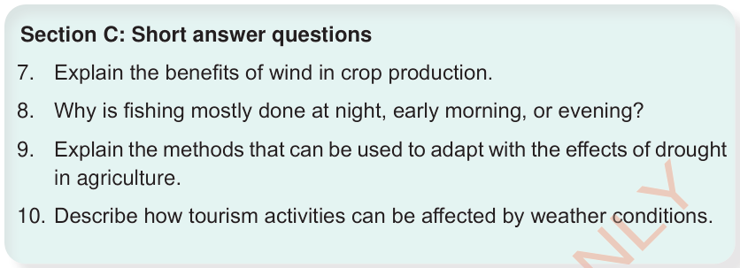

Section C: Short answer questions
7.
Explain the benefits of wind in crop production.
8.
Why is fishing mostly done at night, early morning, or evening?
9.
Explain the methods that can be used to adapt with the effects of drought in agriculture.
10.
Describe how tourism activities can be affected by weather conditions.
